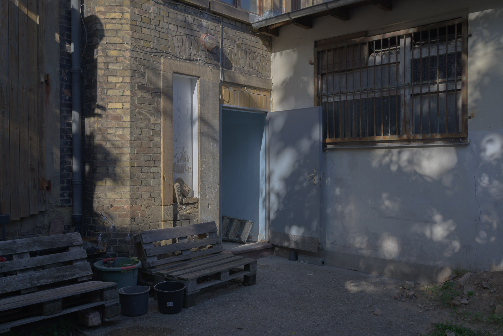

Installation view
Cally Spooner, And as the medieval cloisters connect seamlessly with the corridors of power... I’m quietly confident… (U-Turn!) (2013),
Composition Peter Joslyn and Cally Spooner.
Vocals Rhiannon Drake, Jenny Minton, Piya Malik, Rebecca Thorn, Helen Hart, and Chloë Turpin, recorded live at the Stedelijk Museum, Amsterdam.
Additional vocals Piya Malik.
Edited by Cally Spooner and Tom Sedgwick.
Mixed by Tom Sedgwick, 6 minutes 30 seconds (looped), Site-specific adaptation of single-channel audio work
In this single-channel sound work six singers perform a political U-turn, a cappella.
Typically viewed as failure and weakness in politics, a U-turn — that (very) public moment in which promised positions are abandoned for a new,
contradictory stance — is abstracted here into elongated coughs, umms, and urrrrs which occasionally melodically cohere.
Undulating between dissonance and cohesion the six voices finally crescendo in a briefly triumphant harmony, before collapsing from their
apex into silence, only to re-start the indecision loop again. Resonating with ongoing collapses of political policies, past and present,
this work draws its duration from a 6-minute 30-second parliamentary volte-face in 2013* to consider the technical staging of language
and whether it is publicly possible, or permissible, to simply change one’s mind.
As part of the site-specific adaptation the main entrance of the space at Sophienstraße was locked and visitors were redirected to enter through the backdoor instead.
Courtesy of the artist and ZERO…
* By Michael Gove, then British Education Minister and a prominent leader of Brexit’s Leave campaign.